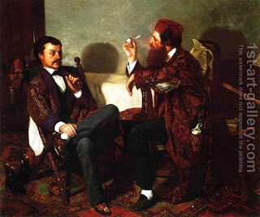

Shevuot (Oaths) 4 - Rabbi Yehudah the Prince Combines Conflicting Opinions
The ruling of "Two that are four" has been established as referring to the liability of lashes, not sacrifices . This change allowed us to say that it could be the opinion of both Rabbi Ishmael and Rabbi Akiva.
Why is this needed? When Rabbi Yehudah, the compiler of all Mishnaic rulings, formulates an anonymous ruling, he is implying that this is the majority opinion and thus the final law. Without our (somewhat forced) explanation, we would have two major authorities disagreeing with the final law.
However, there is still a problem with our answer. To receive lashes, the person must be warned. If he is warned, how can we talk about him being unaware that he eats sacrifices or that he enters the Temple ?
We are forced to retract our explanation about lashes. Rather, we now answer that Rabbi Yehudah the Prince compiles conflicting opinions of different Sages in one ruling. He does so because he wants to assemble together all cases of "Two that are four."
Art: Thomas Hovenden - The Discussion